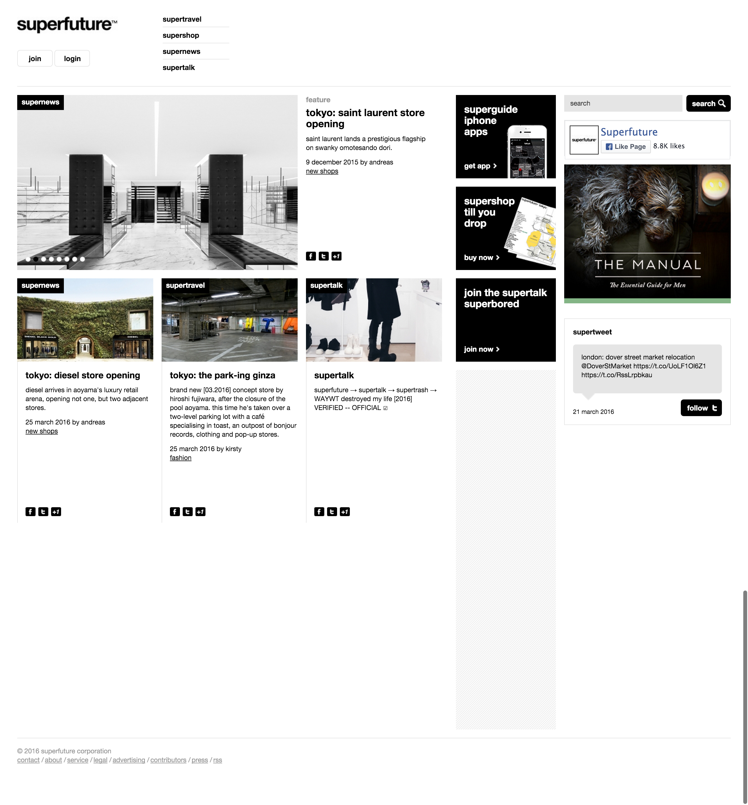
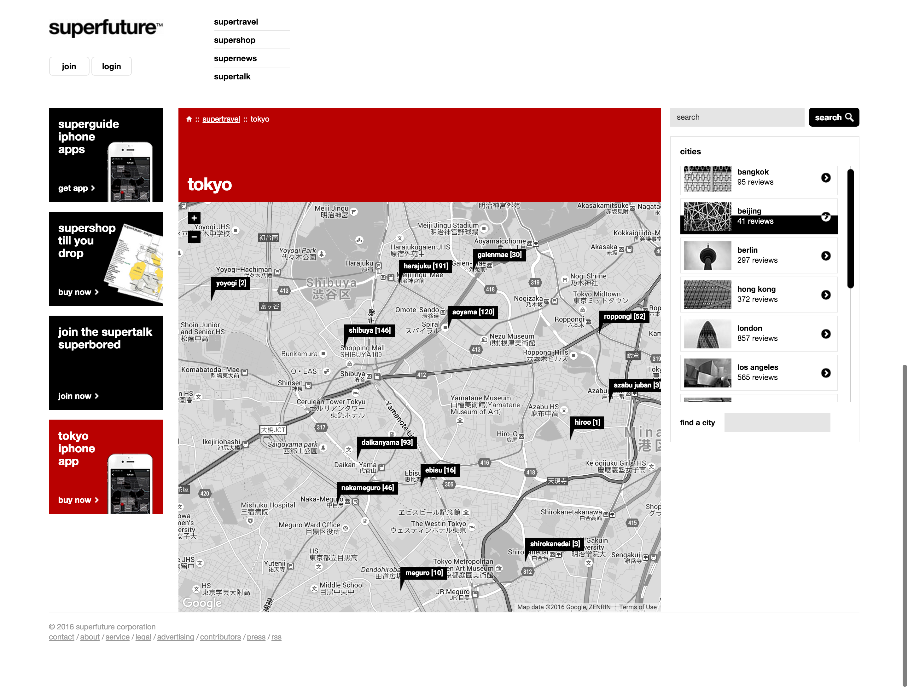

Superfuture
Superfuture is the planets most comprehensive urban travel guide and resource for fashion and design related shopping experts. Known for urban cartography for global shopping experts, the site features ver 10,000 listings, reviews, and details maps in over 280 cities, as well as concierge services, cartography, hotel bookings and more. Also home to Supertalk, the endlessly expanding public community with around 65,000 members and over 3 million posts.
- 
- 